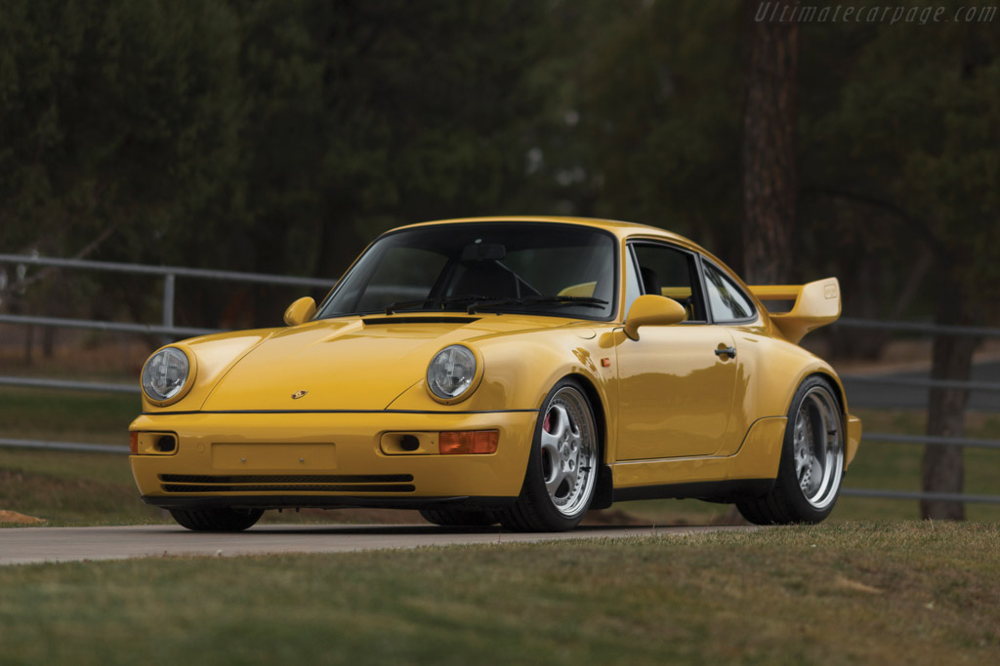
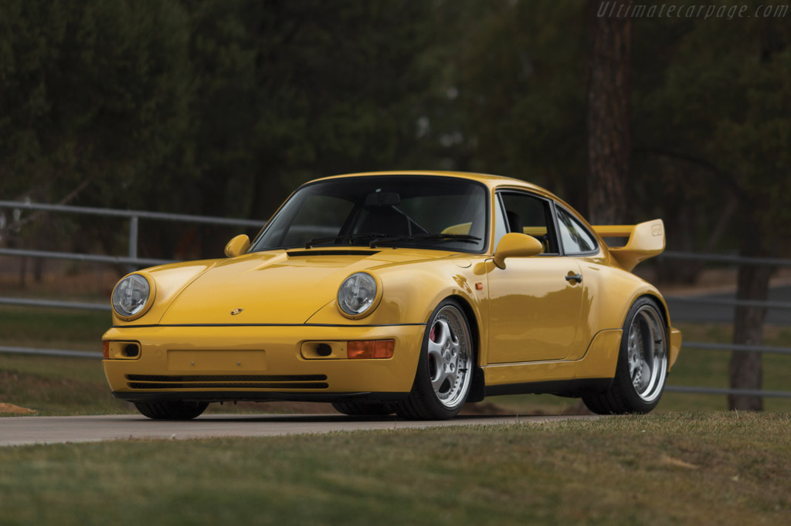
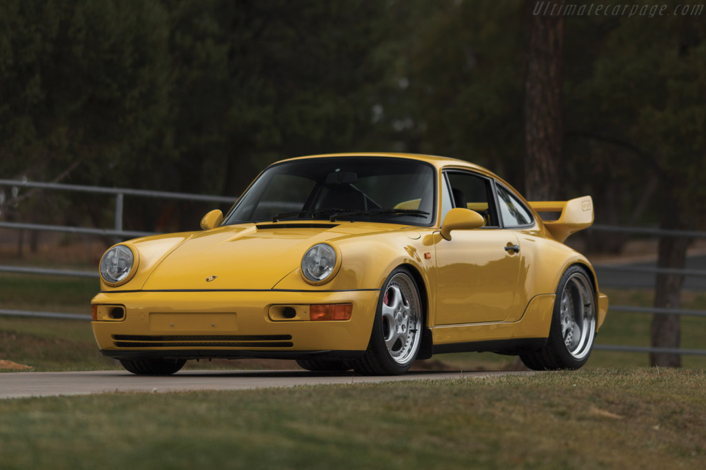

Following the introduction of the E36 M3, racing teams in the United States began pressuring BMW for a homologation version in order to compete in sports-car racing. As a result, the 'M3 Lightweight' was introduced in 1995. The cars came without a radio (although the speakers were installed and the car pre-wired for the radio), air conditioning, leather seats, tool kit or a sunroof. The doors have aluminium skins. There is no underbonnet insulation blanket, and the boot only has carpet on the floor. The under body insulation is thinner and there is special carpeting to lower weight. Overall the changes resulted in a weight 91 kg (200 lb) less than a regular M3. The wheels are 17 inches in diameter, with a width of 7.5 inches at the front and 8.5 inches at the rear. The tyres fitted were 235/40ZR17.
Powertrain changes included the removal of the top speed limiter and a shorter differential ratio (3.23 compared to 3.15). Suspension upgrades consisted of shorter springs from the European-specification M3. Before being sold, the M3 Lightweights were sent to Prototype Technology Group Racing in Virginia for final preparation, which included the front and rear Motorsport flag decals, and "trunk kit". In the boot there was a dual-pickup oil pump (from the European-specification M3), front strut bar, lower cross-brace, spacer blocks to raise the rear wing, and an adjustable front splitter. Each owner was given a 1-page legal document to sign acknowledging that any installation of boot items voided the new car warranty.
All M3 Lightweight cars were produced in the "Alpine White" exterior colour, with the Motorsports flag decals on the left front and right rear corners of the car. There is a fixed wing on the bootlid, some carbon fibre interior trim, and the badges on the side moulding and dash read "BMW Motorsports International".
Although BMW promised to build approximately 100 cars, BMW never released the production numbers of M3 Lightweights built. However, it is estimated that approximately 125 were built.

Porsche 911 Carrera RS 3.8.
In 1992, Porsche produced a super-lightweight, rear-wheel-drive only version of the 964 dubbed Carrera RS for the European market. It was based on Porsche's 911 "Carrera Cup" race car and harked back to the 2.7 and 3.0 RS and RSR models. It featured a revised version of the standard engine, titled M64/03 internally, with an increased power output of 260 bhp (194 kW; 264 PS) and lightweight flywheel coupled to the G50/10 transmission with closer ratios, asymmetrical Limited Slip Differential and steel synchromesh. A track-oriented suspension system with 40 mm (1.6 in) lower ride height, stiffer springs, shocks and adjustable stabilizer bars without power steering (RHD UK cars did have power steering).
A stripped-out interior devoid of power windows or seats, rear seats, air conditioning, cruise control, sound deadening or a stereo system (optionally fitted) and new racing-bucket front seats were part of the package. The trunk hood was made of aluminum and the chassis was seam welded. Wheels were made of magnesium and the glass was thinner in the doors and rear window. The Carrera RS is approximately 345 pounds (155 kg) lighter than the US version Carrera 2 model. Also available were a heavier Touring variant (with sound deadening, power seats (optional), undercarriage protection and power windows) and an N/GT racing variant with a stripped, blank metal interior and a roll cage. They also came with optional lights on the visors.
A later ultra-limited production version, the Carrera 3.8 RS featuring the Turbo body and a 300 PS (221 kW; 296 bhp) 3.8 litre version of the M64 motor was sold briefly in Europe. This engine was bored out by 2 mm for a total of 3,746 cc, and was also available in a more powerful competition version called the 3.8 RSR.
The Carrera RS was not sold in the United States because Porsche Cars North America felt the car's aggressive tuning was not suited to the American market. In 1992, 45 US-legal cars that were very similar to the Carrera RS were imported to the US for a proposed "Porsche Carrera Cup" racing series.
Porsche 911 GT3 RS by KAEGE.
The 911 GT3 RS regardless of generation has massive appeal, but from time to time tuners try to prove there’s room for improvement. The latest example comes from KAEGE which is working on a 997 model that so far has received an M+M muffler system bumping output by 8 horsepower (6 kilowatts) and shaving off 15 pounds (7 kilograms). In addition, a custom air box made from carbon fiber adds a further 7 hp (5 kW) and there’s also a new electrical power steering pump.
Custom air filters and a Sachs sports clutch are part of the extensive package which among others also includes a short-shifter for the gearbox. The bespoke 19-inch BBS wheels reduce unsprung mass by 20 lbs (9 kg) and come wrapped in Michelin Pilot Sport Cup 2 tires. KAEGE has also fitted a custom KW suspension kit made from aluminum while the lithium-ion battery pack eliminates 33 lbs (15 kg). Other miscellaneous weight-saving measures have further reduced the weight of the 997 GT3 RS by 44 lbs (20 kg).
On the inside we notice a retro-flavored checkered fabric upholstery and the tuner also painted the rollover bar along with some of the pieces in the same color as the body. The steering wheel comes from a GT3 RS 4.0 and there are also some changes in the trunk.
We saved the best for last as KAEGE is currently working on the car to squeeze in a 4.3-liter engine pushing out 520 hp (388 kW).

 
